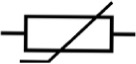
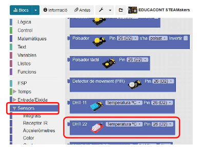

En aquesta activitat elegirem els valors del sensor de temperatura i humitat DHT22. Aquest sensor mesura temperatures en un rang de -400C fins a 800C amb un error de +/-0.50C i la humitat relativa entre 0 0/0 i 100 0/0 amb un marge d'error de +/-2%.
El sensor de temperatura és un termistor tipus NTC. Un termistor és un tipus de resistència en el qual el seu valor resistiu varia en funció de la temperatura.
El terme prové de l'anglès "thermistor", el qual és un acrònim de les paraules Thermally Sensitive Resistor (resistència sensible a la temperatura). Existeixen dos tipus fundamentals de termistors:
• Els termistors amb coeficient de temperatura negatiu (Negative Temperature Coefficient o NTC), el qual decrementen la seva resistència a mesura que augmenta la temperatura.
• Els termistors amb coeficient de temperatura positiu (Positive Temperature Coefficient o PTC), el qual incrementen la seva resistència a mesura que augmenta la temperatura.
La nostra estació de contaminació disposa d'un sensor d'aquest tipus connectat a l'entrada D9.
